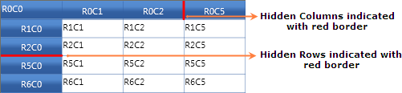
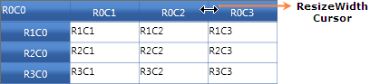
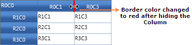
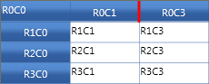
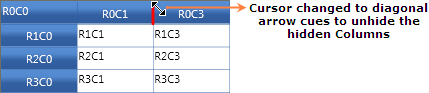
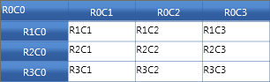

Essential Grid control supports Excel like resizing to hide or unhide columns. It also acts as a visual marker to indicate hidden columns.
Use Case Scenarios
Excel like resizing support can be implemented in applications that contain more number of rows and columns. You can also make some rows or columns to be hidden.
Adding Resizing Support to an Application
The following steps explain the implementation of the Resizing support to an application.
1. Set the Resizing border properties.
Resizing is a built-in property and there is no need to set any special property to enable it. But there are options to set the hidden border color and thickness. Set the HiddenBorderBrush Property to any of SolidColorBrush color for the GridModelOptions (Options Property) object. The assigned color will be brushed in the border color of the hidden column or row. Set the HiddenBorderThickness property to an int value say 3.
The following code snippet explains the implementation of the HiddenBorderBrush and HidderBorderThickness properties.
3.
|
[C#]
this.dataGrid.Model.Options.HiddenBorderBrush = new SolidColorBrush(Colors.Red); this.dataGrid.Model.Options.HiddenBorderThickness = 3;
|
|
[VB]
Me.dataGrid.Model.Options.HiddenBorderBrush = New SolidColorBrush(Colors.Red) Me.dataGrid.Model.Options.HiddenBorderThickness = 3
|
2. Run the application.
To set the rows or columns as hidden by code, you can use the SetHidden() method. It has two int type parameters to get “from Index” and “to Index”, a Boolean type which sets True for hide and False for unhide to hide and unhide the column or row respectively. Run the application and you will find the given row or column to be hidden.
The following code snippet explains the implementation of the SetHidden() method of ColumnWidths and RowHeights property.
|
[C#]
// To hide columns and rows. this.dataGrid.Model.ColumnWidths.SetHidden(3, 4, true); this.dataGrid.Model.RowHeights.SetHidden(3, 4, true);
// To unhide columns and rows. this.dataGrid.Model.ColumnWidths.SetHidden(3, 4, false); this.dataGrid.Model.RowHeights.SetHidden(3, 4, false);
|
|
[VB]
// To hide columns and rows. Me.dataGrid.Model.ColumnWidths.SetHidden(3, 4, True) Me.dataGrid.Model.RowHeights.SetHidden(3, 4, True)
// To unhide columns and rows. Me.dataGrid.Model.ColumnWidths.SetHidden(3, 4, False) Me.dataGrid.Model.RowHeights.SetHidden(3, 4, False)
|
The following is a sample output of Resizing support implementation.

Figure 71: Row index and Column index for 3 and 4 are hidden
3. Hide and unhide a row or column during run-time.
To hide a column or a row, hover at the line of the column or a row. It shows a resizing cursor with a horizontal or a vertical arrow bar so that you can drag the line to its next header cell. After joining to the neighbor Header Cell, the line will be darkened which means that a column or a row is hidden. To unhide the hidden rows or columns, hover on the dark marked line. The cursor will then be changed to a diagonal arrow and by double clicking, the hidden rows or columns can be resized to its original size.
The following screenshot explains how to hide and unhide a column.
Hover over the header cell’s border line. The cursor will be changed to horizontal arrow bar, as like in the following screenshot.

Figure 72: Hover on the border line of a header
Drag it to Column 2 so that the Border color changes as like in the following screenshot.

Figure 73: After dragging and joining the border line to the neighbor cell
The following image shows the output after hiding the row by Mouse Dragging.

Figure 74: Output of the hidden column to the neighbor cell
To unhide the hidden row, hover the mouse on the hidden column border line. A diagonal arrow cursor will be displayed as in the following screenshot.

Figure 75: Hover on the hidden Column the Cursor changes to diagonal arrow
Double click on it so that it unhides all the hidden columns in that particular hidden column.

Figure 76: After double clicking the hidden column it unhides all the hidden Columns
Properties
Table 14: Resizing support Table
|
Property |
Description |
Data Type |
Default value |
Available inside the Property |
Class Name |
|
HiddenBorderBrush |
Sets the border brush color for the hidden rows or columns. |
SolidColorBrush |
Black |
RowHeights |
GridModelOptions |
|
HiddenBorderThickness |
Sets the border thickness for the hidden rows or columns. |
int |
1 |
ColumnWidths |
GridModelOptions |
Methods
Table 15: Resizing support Table
|
Method |
Description |
Parameters |
Available inside the Property |
Return Type |
|
SetHidden() |
Sets the specified “from” rows to “to” rows as hidden. |
int from, int to, bool hide |
RowHeights |
void |
|
SetHidden() |
Sets the specified “from” columns to “to” columns as Hidden. |
int from, int to, bool hide |
ColumnWidths |
void |
Sample Link
Refer to the sample in the shipped Sample Browser.
Go to Essential Studio Silverlight Sample Browser à Grid à GridDataControl-Advancedà HiddenRowColDemo.